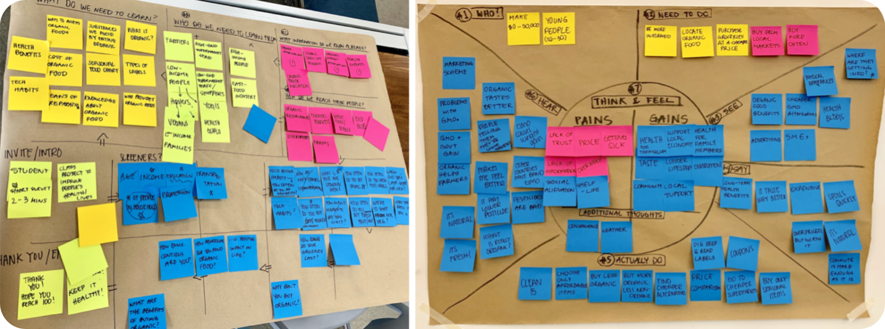
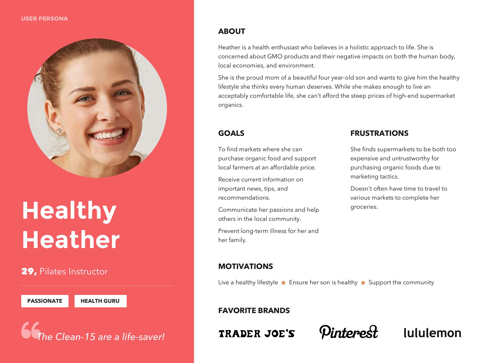
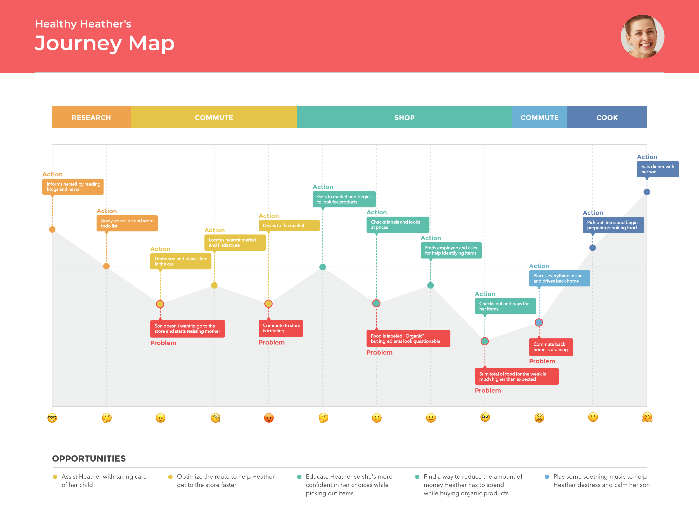
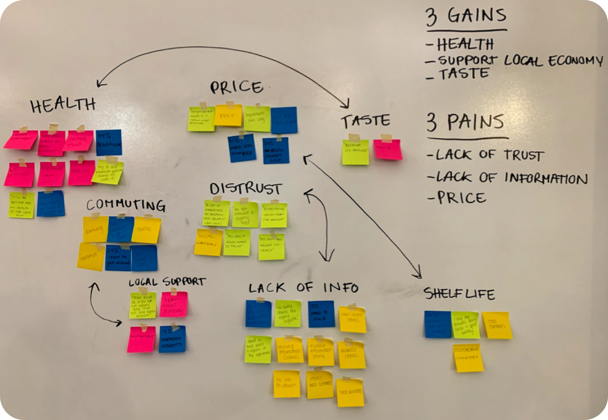

At my first week coursing the Full Time UX/UI Bootcamp in Ironhack, my classmates and I were given a project to develop a practical framework to think creatively through small steps. Design Thinking and its five-stage design thinking process is a very common strategy used by companies today to activate creativity and solve problem. Our Design Thinking Workshop was to apply it to a wicked problem. A wicked problem has no stopping rule, no one-shot operation, having more than one explanation.
In the last decades, there has been a rise in consciousness on the importance of good nutrition and the responsibility that individuals have to provide themselves with good food. Organic food is not accessible to everyone, being restricted to those who can actually afford it.
Supermarket chains and other big companies benefit from the organic food market and conscious customers, but don’t actually solve the situation — they just make the gap and the impact bigger with unsustainable models. How Might We help communities access the seasonal produce of their region, fueling fair and honest relationships between producers and customers while ensuring food safety for all
In order to understand our users, my team; Team Avocado began with the first step of the Design Thinking Process, and we started to Empathize with our users trying to see what are their current unmet needs and what needs will they have in the future.
In order to dive into the research, we’ve applied some UX methodologies such as: Value Proposition Canvas which is a team tool for generating surveys faster, from there we created our Surveys and Interviews to users. Based on our results we created an Empathy Map which is used to synthesize rational and sentimental aspects of our users through their situation, feelings and emotions.
Once we analyzed our empathy map we created our User Persona named Healthy Heather. A user persona is a single kind of user whose needs and goals fit into a single product. Once we created Healthy Heather profile we generated a Storyboard which helped us visualized her before, during, and after process through out a graphic sequence. To really analyze Healthy Heather experience in purchasing organic produces we created a User Journey Map.
“A customer journey map is a visualization of the process that a person goes through in order to accomplish a goal. It’s used for understanding and addressing customer needs and pain points.” — Nielsen Norman Group


After finishing the first step of the Design Thinking, we started with the following step Define. Define our users, needs and insights.To do so, we created an Affinity Map where we clustered our findings from our data to find trends and repeating patterns. Once this was done, we structured our Pains and Gains points and possible goals.

In order to interpret our data, we created a “How Might We” statements to unravel our problems. From there, we Ideate the focus by categorizing our HMW scenarios by doing a silent dot-voting where my team member and I placed dot stickers next to a small part of the problem and came up with a solution. This is a quick and simple method for prioritizing a long list of options. Our “How Might We” was the following:
We believe creating a platform to compare prices from different markets for young, health-conscious mothers will achieve their goal of buying organic products at the lowest price.
We will know we are right when the organic industries fulfills their business objectives when users start to shop at a greater number of markets and begin favoring organic products over non-organic products in their shopping habits.